layout: true .footer[ - <div class="tooltip"><a href="/"><i class="fas fa-home"></i></a> <span class="tooltiptext">Go to C370 Main Page</span></div> - <div class="tooltip"><a href="/lecture/slides"><i class="fas fa-chalkboard-teacher"></i></a><span class="tooltiptext">Go to Lecture List</span></div> - <div class="tooltip"><i class="fas fa-question"></i><span class="tooltiptext">Press <kbd>Shift</Kbd> + <kbd>?</kbd> for Navigation Tips!</span></div> ] --- class: center <!-- ========================= Title Slide ============================= --> <div style="margin-top: 100px;"></div> <h1 style = "text-align: left; font-weight: bold; margin-left: 175px;">Week 15: Chromatography</h1> <h5 style = "text-align: left; font-weight: bold; margin-left: 175px;">Harvey Ch 12</h5> 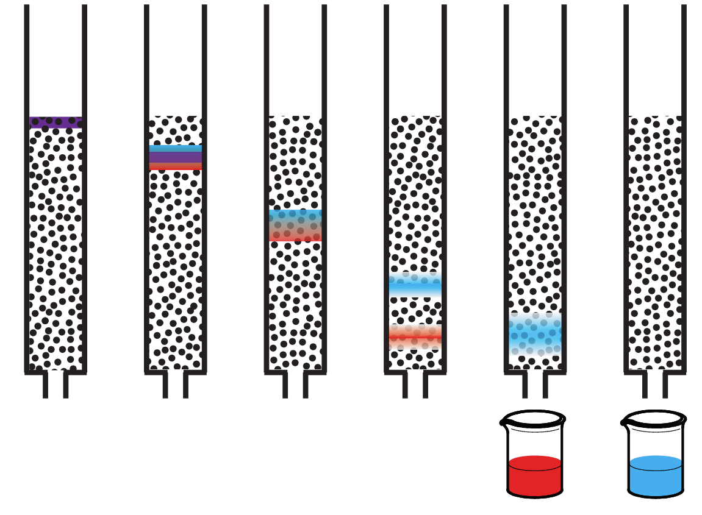 .image-credit[David Harvey / [Analytical Chemistry 2.1](https://chem.libretexts.org/Bookshelves/Analytical_Chemistry/Book%3A_Analytical_Chemistry_2.1_%28Harvey%29) / [CC BY-SA 4.0](https://creativecommons.org/licenses/by-sa/3.0/at/deed.en)] --- class: center # Preparing a Sample 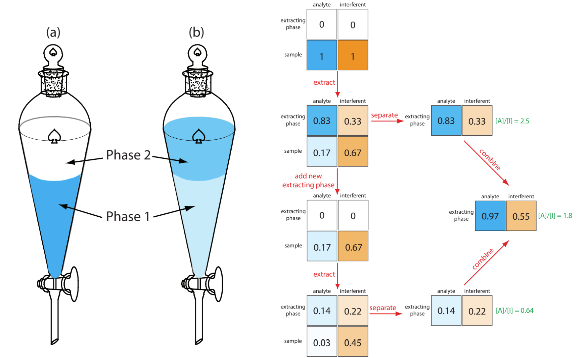 .image-credit[David Harvey / [Analytical Chemistry 2.1](https://chem.libretexts.org/Bookshelves/Analytical_Chemistry/Book%3A_Analytical_Chemistry_2.1_%28Harvey%29) / [CC BY-SA 4.0](https://creativecommons.org/licenses/by-sa/3.0/at/deed.en)] --- class: center # Preparing a Sample 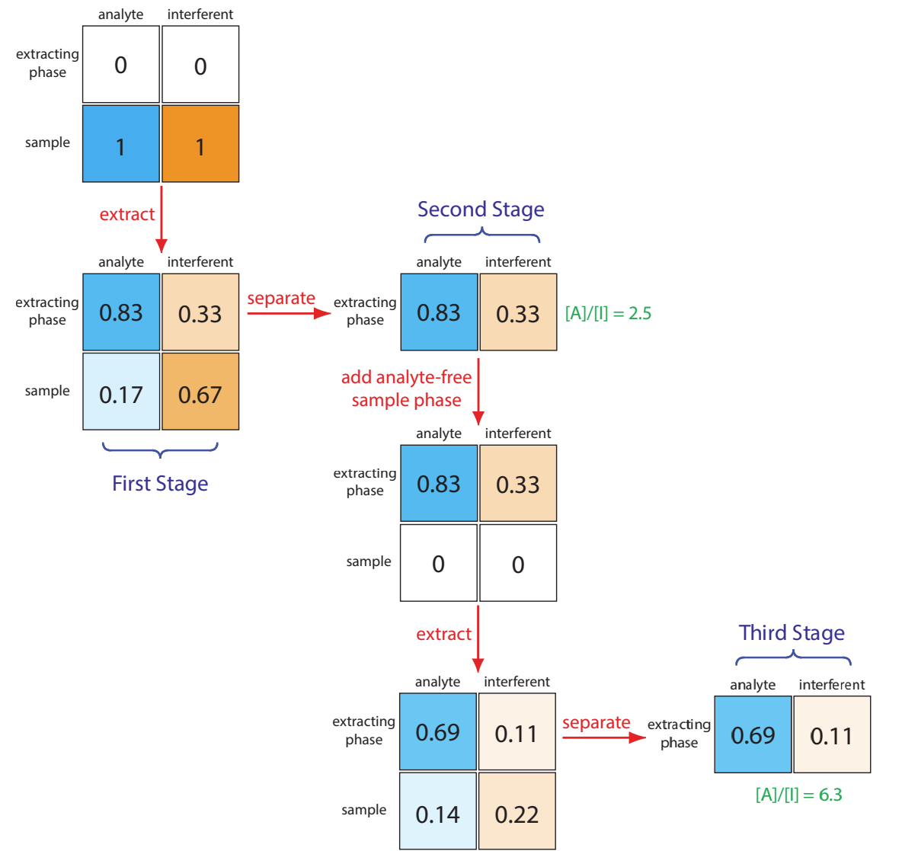 .image-credit[David Harvey / [Analytical Chemistry 2.1](https://chem.libretexts.org/Bookshelves/Analytical_Chemistry/Book%3A_Analytical_Chemistry_2.1_%28Harvey%29) / [CC BY-SA 4.0](https://creativecommons.org/licenses/by-sa/3.0/at/deed.en)] --- class: center # Chromatography 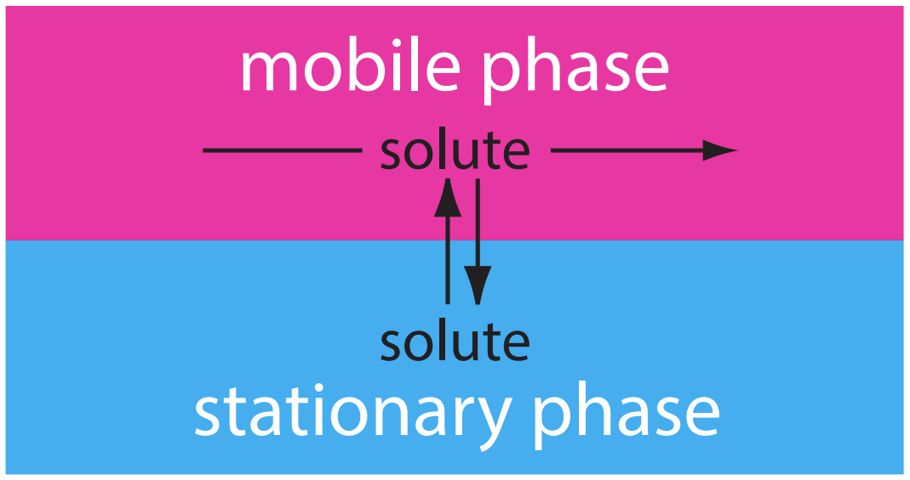 .image-credit[David Harvey / [Analytical Chemistry 2.1](https://chem.libretexts.org/Bookshelves/Analytical_Chemistry/Book%3A_Analytical_Chemistry_2.1_%28Harvey%29) / [CC BY-SA 4.0](https://creativecommons.org/licenses/by-sa/3.0/at/deed.en)] --- class: center # Chromatography .image-credit[David Harvey / [Analytical Chemistry 2.1](https://chem.libretexts.org/Bookshelves/Analytical_Chemistry/Book%3A_Analytical_Chemistry_2.1_%28Harvey%29) / [CC BY-SA 4.0](https://creativecommons.org/licenses/by-sa/3.0/at/deed.en)] --- class: center # Chromatography 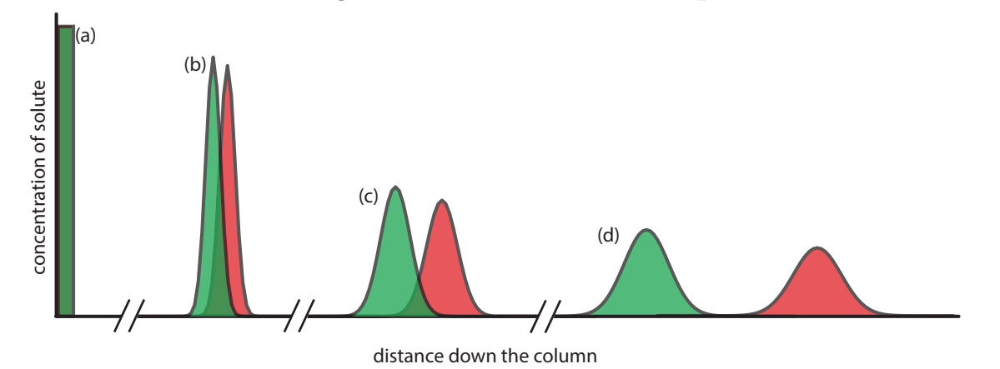 .image-credit[David Harvey / [Analytical Chemistry 2.1](https://chem.libretexts.org/Bookshelves/Analytical_Chemistry/Book%3A_Analytical_Chemistry_2.1_%28Harvey%29) / [CC BY-SA 4.0](https://creativecommons.org/licenses/by-sa/3.0/at/deed.en)] --- class: center # Chromatography 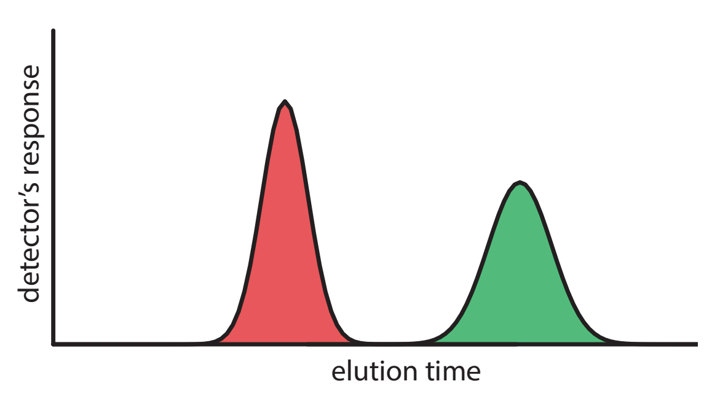 .image-credit[David Harvey / [Analytical Chemistry 2.1](https://chem.libretexts.org/Bookshelves/Analytical_Chemistry/Book%3A_Analytical_Chemistry_2.1_%28Harvey%29) / [CC BY-SA 4.0](https://creativecommons.org/licenses/by-sa/3.0/at/deed.en)] --- exclude: true # Types of Chromatography - Planar - Column --- class: center # Types of Chromatography 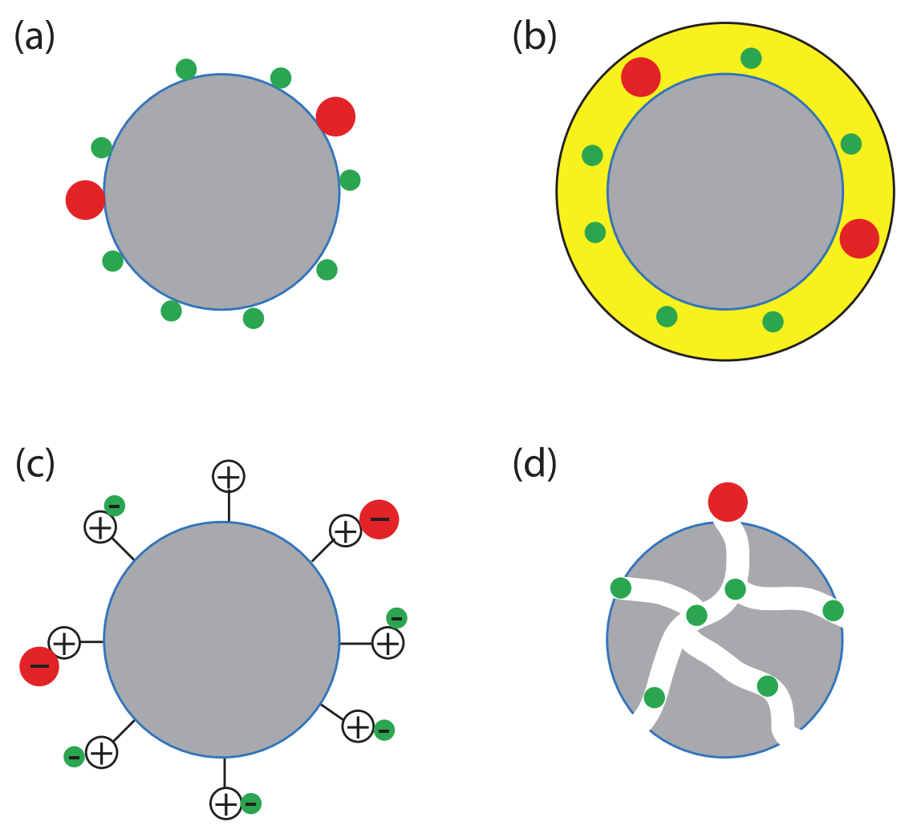 .image-credit[David Harvey / [Analytical Chemistry 2.1](https://chem.libretexts.org/Bookshelves/Analytical_Chemistry/Book%3A_Analytical_Chemistry_2.1_%28Harvey%29) / [CC BY-SA 4.0](https://creativecommons.org/licenses/by-sa/3.0/at/deed.en)] --- exclude: true # Types of Chromatography - Adsorption (liquid-solid) - Partition (liquid-liquid or gas-liquid) --- class: center # Characterizing Peaks 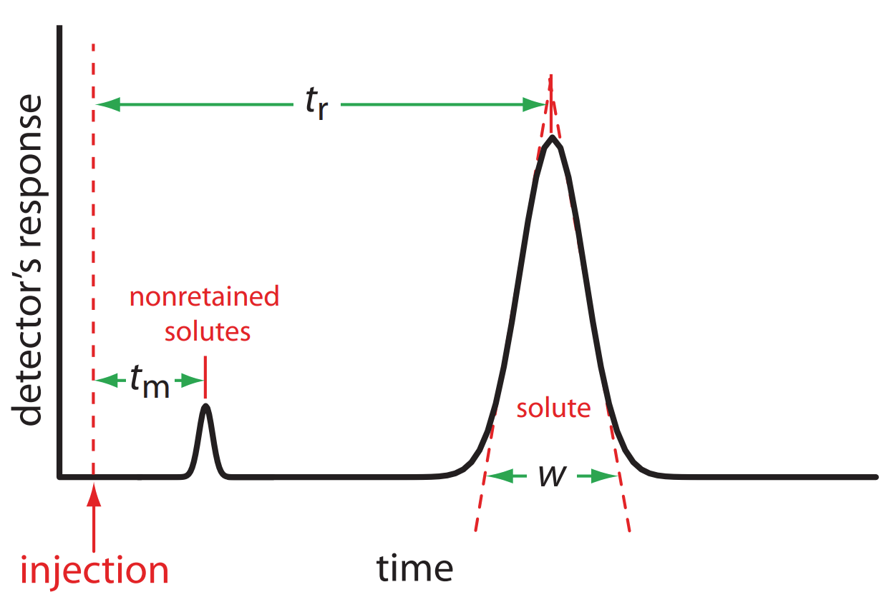 .image-credit[David Harvey / [Analytical Chemistry 2.1](https://chem.libretexts.org/Bookshelves/Analytical_Chemistry/Book%3A_Analytical_Chemistry_2.1_%28Harvey%29) / [CC BY-SA 4.0](https://creativecommons.org/licenses/by-sa/3.0/at/deed.en)] --- # Practice: Retention Factor A compound elutes with a retention time of 7.21 minutes, and the column's void time is 0.27 min. What is the retention factor for this compound? --- class: center # Describing a Chromatogram 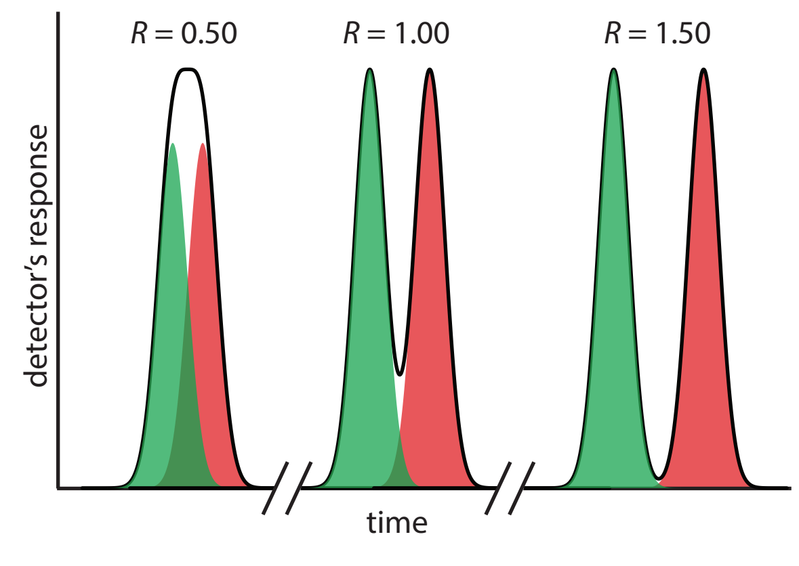 .image-credit[David Harvey / [Analytical Chemistry 2.1](https://chem.libretexts.org/Bookshelves/Analytical_Chemistry/Book%3A_Analytical_Chemistry_2.1_%28Harvey%29) / [CC BY-SA 4.0](https://creativecommons.org/licenses/by-sa/3.0/at/deed.en)] --- # Practice: Resolution Compound A elutes with $t\_r$ = 8.51 min and $w\_b$ = 0.83 min. Compound B elutes with $t\_r$ = 9.83 min and $w\_b$ = 0.91 min. What is the resolution for these two peaks? --- # Characterizing Peaks: Theoretical Plates 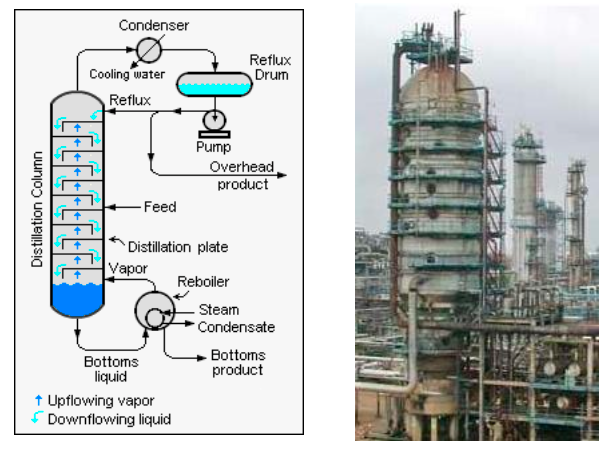 .image-credit[H Padleckas / [wikimedia.org](https://commons.wikimedia.org/wiki/File:Continuous_Binary_Fractional_Distillation.PNG) / [CC BY-SA 3.0](https://creativecommons.org/licenses/by-sa/3.0/at/deed.en)] --- # Practice: Theoretical Plates Compound A elutes with $t\_r$ = 8.51 min and $w\_b$ = 0.83 min. How many theoretical plates are there? If the column is 2.0 meters long, what is the height of a theoretical plate in mm? --- class: center # Characterizing Peaks: Asymmetry 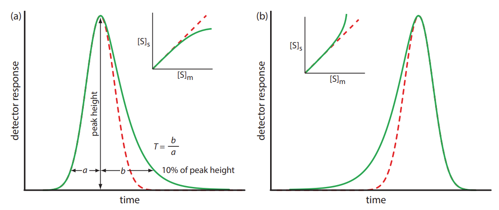 .image-credit[David Harvey / [Analytical Chemistry 2.1](https://chem.libretexts.org/Bookshelves/Analytical_Chemistry/Book%3A_Analytical_Chemistry_2.1_%28Harvey%29) / [CC BY-SA 4.0](https://creativecommons.org/licenses/by-sa/3.0/at/deed.en)] --- # van Deemter: Eddy Diffusion 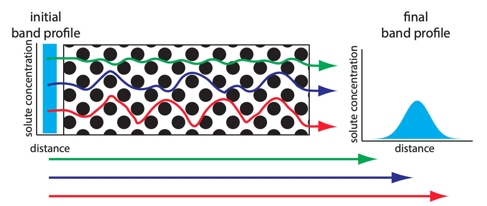 --- # van Deemter: Longitudinal Diffusion 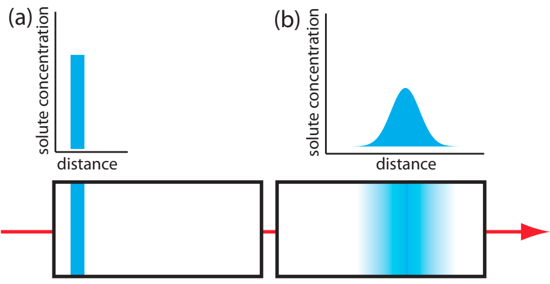 .image-credit[David Harvey / [Analytical Chemistry 2.1](https://chem.libretexts.org/Bookshelves/Analytical_Chemistry/Book%3A_Analytical_Chemistry_2.1_%28Harvey%29) / [CC BY-SA 4.0](https://creativecommons.org/licenses/by-sa/3.0/at/deed.en)] --- # van Deemter: Mass Transfer 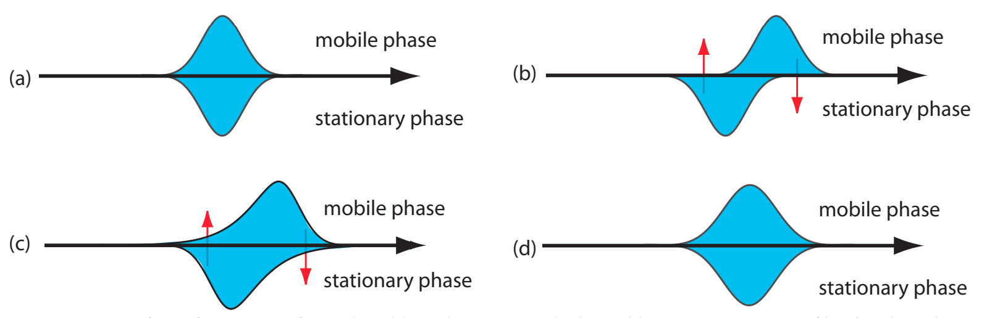 .image-credit[David Harvey / [Analytical Chemistry 2.1](https://chem.libretexts.org/Bookshelves/Analytical_Chemistry/Book%3A_Analytical_Chemistry_2.1_%28Harvey%29) / [CC BY-SA 4.0](https://creativecommons.org/licenses/by-sa/3.0/at/deed.en)] --- # van Deemter 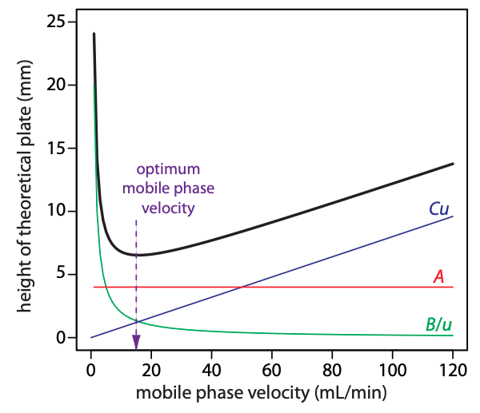 .image-credit[David Harvey / [Analytical Chemistry 2.1](https://chem.libretexts.org/Bookshelves/Analytical_Chemistry/Book%3A_Analytical_Chemistry_2.1_%28Harvey%29) / [CC BY-SA 4.0](https://creativecommons.org/licenses/by-sa/3.0/at/deed.en)] <!-- =============================================================================== -->